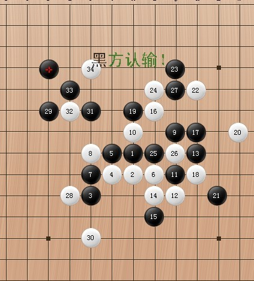

深夜上线，点评小刀棋局~~！
#1 深夜上线，点评小刀棋局~~！作者：逆刃 发表时间：2011-5-15 0:34:38

实战棋谱如上图。
大概看了一下全盘棋，前面开局15手步不予讨论，为双方开局的选择。因为如果开局定式什么的错误根本没有讨论的必要。我觉得下棋的趣味还是在中盘，15手棋之内能分出胜负的棋要么是开局失误，要么是行棋中的简单防守失误。废话不多说，让我们来看看这盘棋的疏漏所在。（这里主要点评疏漏，也就是不好的棋，妙手就不说了。）
首先，略过开局，可以看到黑棋在19手的时候下错，白棋本来是可以必胜的，所以19要换。胜法如下：
=======上图对应的爱五子棋谱代码如下，以便你拆解：========
h8h7f6g7g8i7f7f8j9h9j7j6k8i6i5i10k9k7h10l6k6l4
======================================================
黑棋23手不好，给自己留下一个看似长连的禁手(虽然可以通过冲四化解），一般选点的时候制造禁手的点要非常慎重，除非能排除掉抓禁而同时对自己非常有利的情况。其实这个时候白棋是有很大机会的。白棋是否能必胜尚不清楚。
28手有点冒进，一心想切断黑棋下半盘同时为自己的活二做准备，这样给黑棋留下了太大的优势。感觉黑棋有必胜，大家可以拆拆看。或者黑棋完全可以先拓展，实在不行盖一手活二，白棋没辙。如果这样下的话白棋只有如下防守，几乎唯一，黑棋是否有其它办法杀掉？没有深入研究。
=======上图对应的爱五子棋谱代码如下，以便你拆解：========
h8h7f6g7g8i7f7f8j9h9j7j6k8i6i5i10k9k7h10m9l6k11j12i11i8j8j11e6j13j10i12l12m13e9d10f9g9l8n10e8e10g10d7h13
======================================================
实战中29手选择了直接防守，如果是直接防守的话，个人认为还不如直接盖活二上面的点，这样白棋一点机会都没有了。所以综上所述，28手存在很大问题。
实战白棋的30手其实是个骗，咋看只是一个简单的防守，而且竟然选择防守黑棋下面，仔细一看，白棋其实是有做V的手段的，也就是说如果黑棋不能连续进攻(VCT）取胜的话，就必须反过来防一手。
在看实战，黑棋似乎没有发现，仍然在上面做棋，此时31手其实是必败，因为黑棋并不是VCT取胜。下面所示的32手必胜：
=======上图对应的爱五子棋谱代码如下，以便你拆解：========
h8h7f6g7g8i7f7f8j9h9j7j6k8i6i5i10k9k7h10m9l6k11j12i11i8j8j11e6d10f4f10h4
======================================================
实战中白棋并不知道自己已有必胜，而选择防守，相反，此时黑棋的33手后反了白棋的V，白棋就被牵引着。实战34必败，黑棋35手可以直接VCT取胜。
棋评中所述能必胜的地毯请自行解决。
［ gerbo 于 2011-5-15 4:31:01 时花20金币送鲜花一朵］
［ 茗弈小刀 于 2011-5-15 11:07:20 时奖励此帖[金币加 100 威望加1］
［此帖子已被 逆刃 在 2011-5-15 11:12:00 编辑过］
［ 消逝的雨 于 2011-5-15 16:49:31 时花20金币送鲜花一朵］
［ 消逝的雨 于 2011-5-15 16:49:38 时花20金币送鲜花一朵］
#2 Re:深夜上线，点评小刀棋局~~！作者：gerbo 发表时间：2011-5-15 4:30:43
 深夜送花。
深夜送花。#3 Re:深夜上线，点评小刀棋局~~！作者：茗弈宽容 发表时间：2011-5-15 11:49:55
谢谢刃刃的点评.汗啊,竟然有这么多问题,19手那个点我当时觉得是白的要点所以占了,其实忽略了白右下的棋;23手也只是感觉白右边没有杀，而去抢地盘了，没考虑太多如禁手类问题。29手也没仔细计算，一厢情愿限制中发展，嘿嘿。30手虽然感觉有隐藏的危险，但由于时间有限没去算更以为自己的先手就米有甩他，急于把自己上边的优势去发挥出来，这里看来也犯了不去算对手棋的大错误！另外31的正解请刃刃指点，在30的左边行吗？
［此帖子已被 茗弈宽容 在 2011-5-15 11:58:55 编辑过］
#4 Re:深夜上线，点评小刀棋局~~！作者：逆刃 发表时间：2011-5-15 12:50:20
这里白棋的30手是一着妙手。属于防守反击很好的一种手段，杀伤力强。
黑棋31手下30左边的话属于纯防守的一子，占据了对白棋来说十分有价值的一个点，基本上断了白棋的路线。这时候也给了白棋一手棋的机会，白棋如果下面拿不下的话可以回防一手，比如32盖上面的眠跳三。这样的话盘面基本平衡了，差不多是和棋的局面。黑棋可以考虑交换掉下面的优势，稳定住上盘的优势。
［ 茗弈宽容 于 2011-5-15 14:39:26 时花20金币送鲜花一朵］
#5 Re:深夜上线，点评小刀棋局~~！作者：茗弈宽容 发表时间：2011-5-15 14:38:56
谢谢#6 Re:深夜上线，点评小刀棋局~~！作者：消逝的雨 发表时间：2011-5-15 17:09:10
20手我没有思考过白棋怎样去取胜，在我的思维里，在前几十手内，白棋就该当充当一个防守者，在我的对局里，特别是拿白棋的时候，很少在前几十手内选择进攻，经常是死防到底，如果侥幸防住了，后盘的空间也几乎没了，以后下棋会选择一些反击，对攻比较强烈的变化来下的。30手巧合呀，我没思考到后续做V的妙着，我原本是看着30在E4或者E5，后续可以做出VCF43杀的，后来我又看到了这个30，可是读秒快完了，我单纯的认为后续应该能有做VCF43杀的点,根本没有往抓禁那方面想，就落下了这样的一个30，下完之后，我才发现没有可以做VCF43杀的点。然后就挂了，我对于禁手，除非刻意的去想，才可能做出来，平时经常忽略了白棋可以通过做棋来抓禁的点，做棋经常都是去思考怎样连续的活三或者冲四去取胜，以后一定要注意这方面的问题。另外，谢谢逆刃老师的点评。
［ 茗弈小刀 于 2011-5-15 19:47:07 时奖励此帖[金币加 100 威望加1］
#7 Re:深夜上线，点评小刀棋局~~！作者：茗弈七夜 发表时间：2011-5-16 10:42:26
这样的思维需要不断加强啊，学习了，受益匪浅